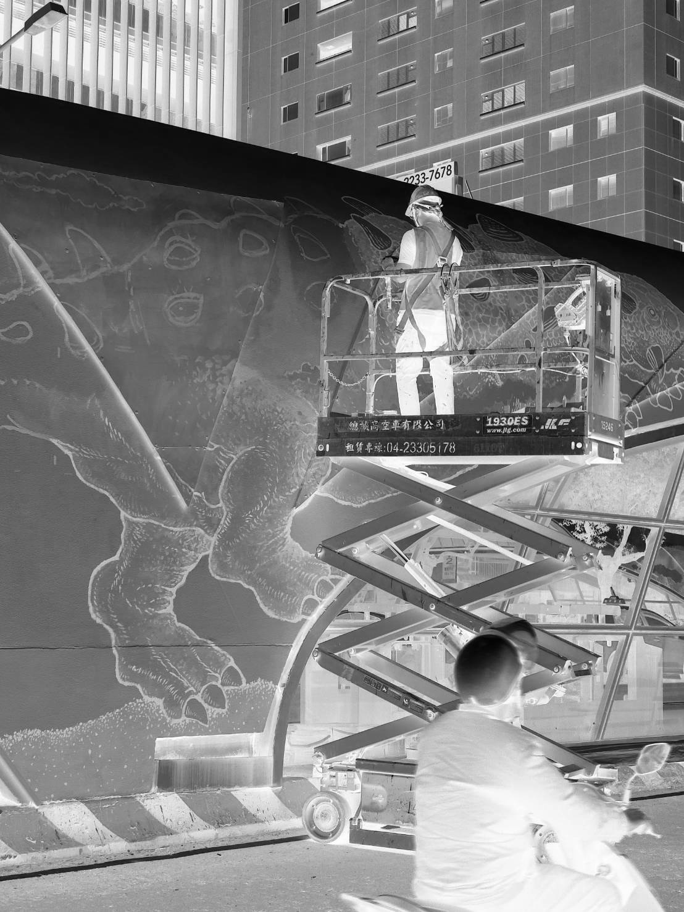
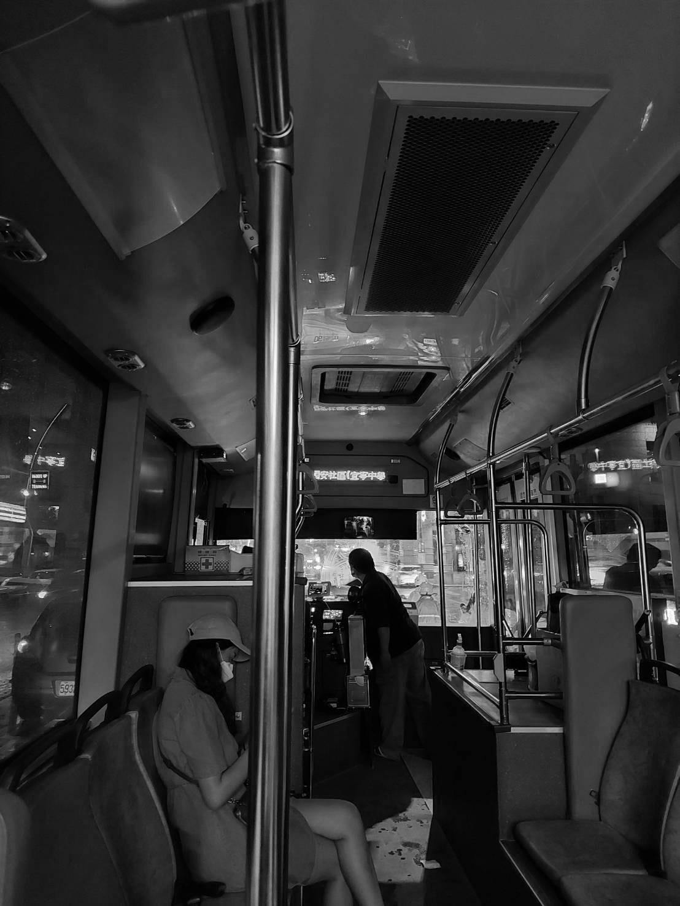
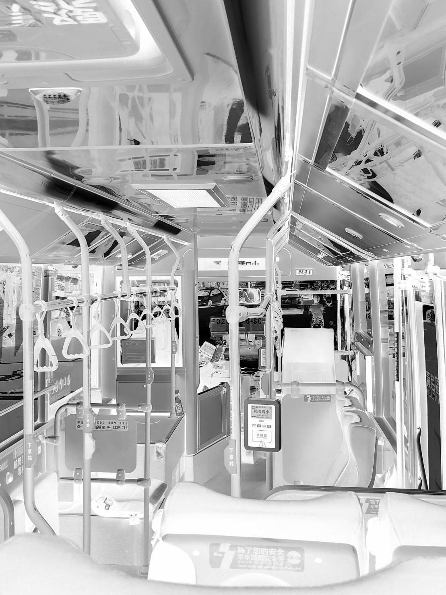
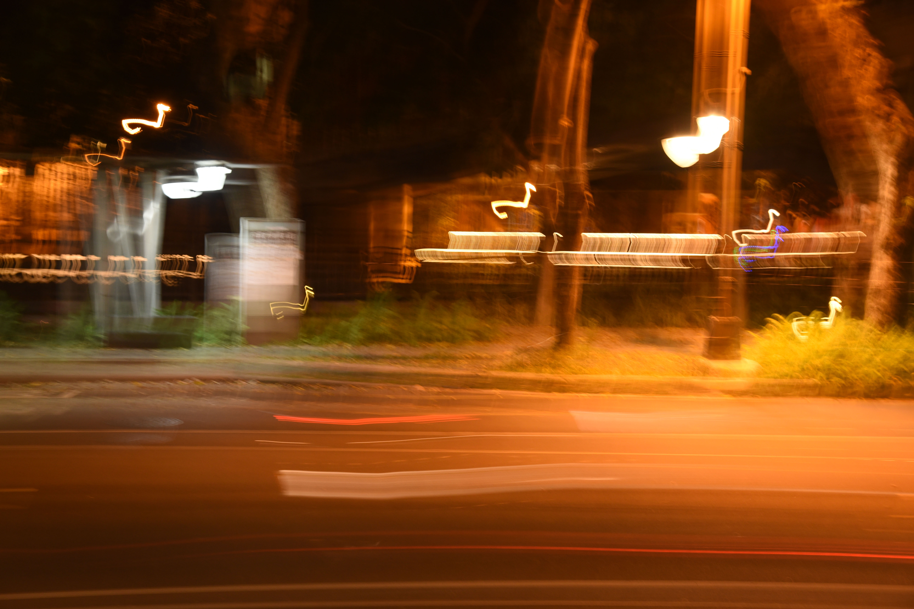

Preface
『公車與我』為命題的攝影系列作品，是我從生活周遭開始著手觀察，發覺每日上下學通勤，搭乘「公車」是我的主要選擇，假日的休閒也會選擇「公車」來代步，所以萌生出試著挖掘這件與我最密切相關的事物，嘗試透過鏡頭發覺平凡事物中的美感與驚喜。
Thank you for visiting my exhibition.


Painting & Bus 02
我會捕捉這個瞬間是因為兩個人物間奇妙的氛圍，彩繪創作者淡定地在極度繁忙的馬路中央持續創作，而路過的機車騎士頭也不抬地向前行駛，兩者互不打擾，卻又處在同一時空下，畫面前後產生強烈的割裂感。
Go somewhere 
車流殘影

此幅攝影作品我命名為「車流殘影」，是練習捕捉夜間車流光線的實驗性作品。最前方的車流殘影、中段的路燈及公車亭照明和遠景中的柳川裝飾性光線交相呼應，不同層次、色溫的光線，更譜出春日夜晚的光之奏鳴曲。
歸途 Way Back Home

此幅攝影作品我命名為「歸途」，是晚間回家在中興大學門正門的公車站候車時，抓拍到對岸反向的末班車，公車上仍有些許乘客，想必他們結束一天的工作或學習，返家的心情也與我同樣迫切。